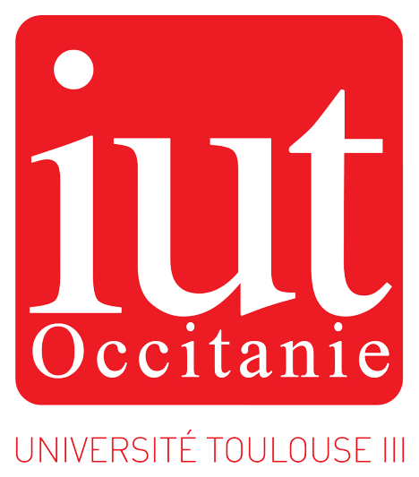
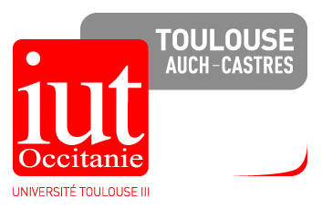
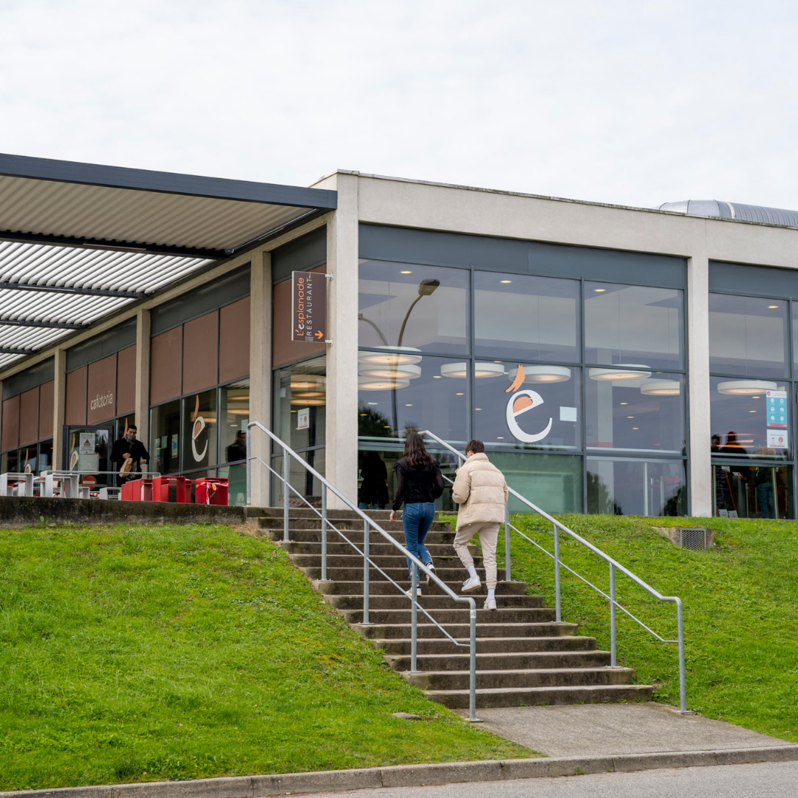
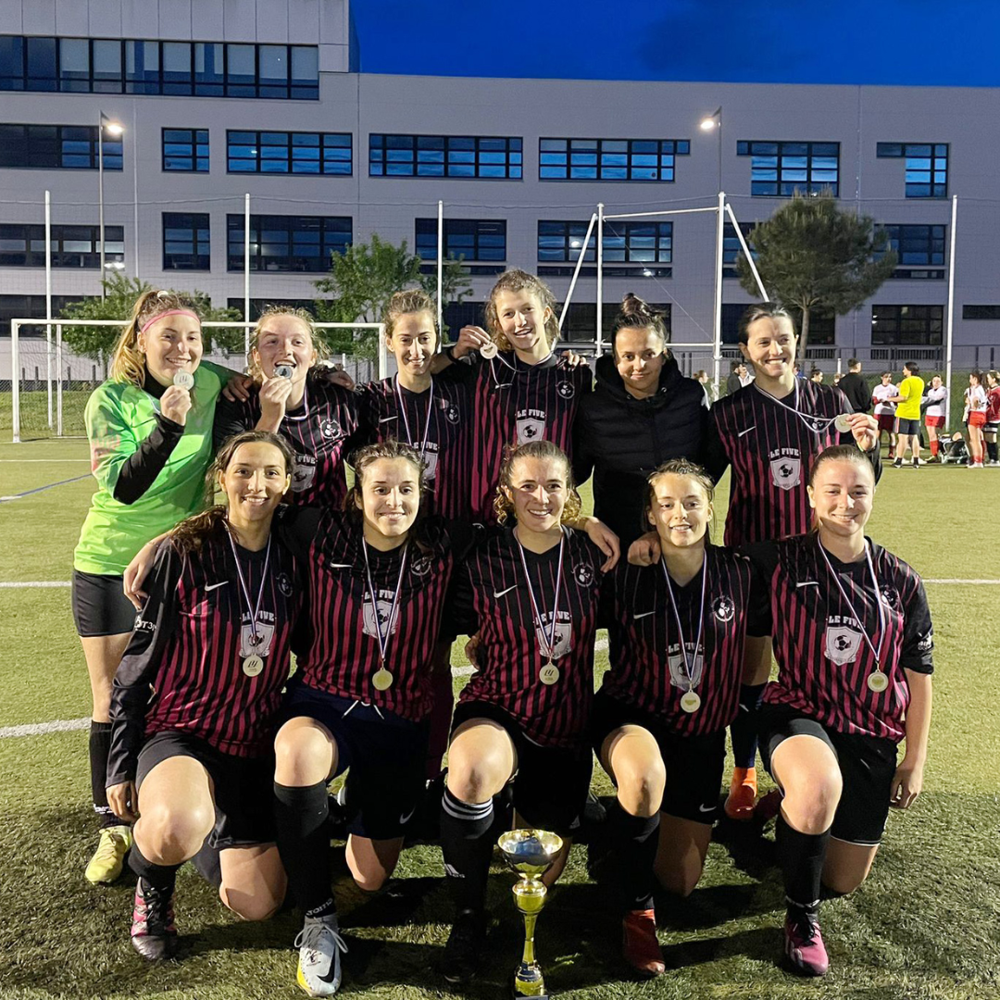
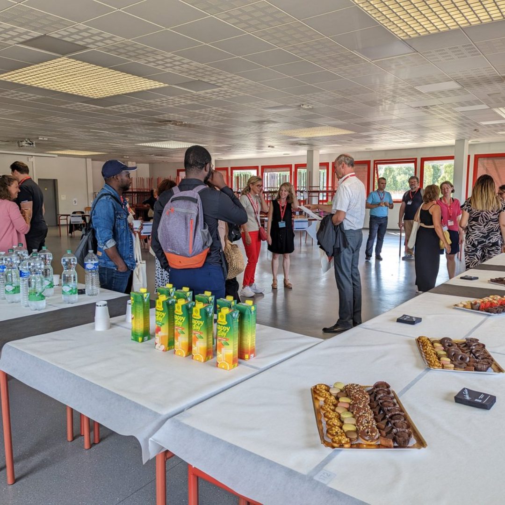

Le bachelor universitaire de technologie (BUT) est une licence professionnelle, et un diplôme national de l'enseignement supérieur français créé en 2019 sanctionnant les trois premières années d'études dans un institut universitaire de technologie (IUT). Ce diplôme permet la délivrance intermédiaire d'un diplôme universitaire de technologie (DUT). Il sanctionne trois ans d'études avec 180 crédits ECTS. (wikipedia)

Créé en 1967, le département Informatique accueille chaque année 168 étudiants en première année du BUT. Le Bachelor Universitaire de Technologie Informatique permet d'acquérir les connaissances et les compétences pour le développement, l'analyse et l'optimisation de solutions informatiques. Il forme des techniciennes supérieures et des techniciens supérieurs qui participent à la conception, à la réalisation et à la mise en œuvre de solutions informatiques pour répondre aux besoins des utilisateurs dans les Entreprises de Services du Numérique (ESN) et des secteurs d'activités comme les sociétés de télécommunications, les industries, les services publics ou encore les éditeurs de logiciels.
Adresse:
Département Informatique, 133 B, Avenue de Rangueil, BP 67701, 31077 TOULOUSE cedex 4, FRANCE
Email : info.contact@iut-tlse3.fr
Tel : 05 62 25 87 61
Il s'agit des points de restauration les plus proches de ces campus, mais vous avez bien sûr accès à l'ensemble des points de restauration du CROUS sur présentation de votre carte étudiante. Ces emplacements spécifiques ont été désignés comme les options de restauration les plus proches des campus en question, offrant aux étudiants une proximité pratique pour satisfaire leurs besoins alimentaires. Cependant, il est essentiel de souligner que la carte étudiante donne accès à l'ensemble du réseau de restauration du CROUS, offrant ainsi une flexibilité accrue pour choisir parmi une variété d'options de repas dans d'autres endroits en fonction des préférences individuelles.
Le pôle sport garantit la implementation de la politique sportive de l'université à travers diverses initiatives. Cela inclut la formation personnelle, qui propose des activités sportives en initiation, perfectionnement et compétition exclusivement ouvertes aux étudiants et au personnel de l'université. De plus, il offre une formation validante (option EPS) avec des enseignements intégrés aux cursus universitaires, ainsi qu'une formation qualifiante débouchant sur la délivrance de diplômes d'encadrement en partenariat avec différentes fédérations. Le pôle sport assure également l'accueil des Sportifs de Haut Niveau (SHN) et de Bon Niveau National (BNN), favorisant la conciliation de leur double projet entre pratique sportive de haut niveau et études supérieures. Il prend en charge l'accueil des étudiants en situation de handicap (ESH) et la gestion des installations sportives. En outre, le pôle s'engage activement au sein de l'Association sportive, participant aux compétitions FFSU, aux activités de plein air, ainsi qu'aux événements sportifs.
Le Centre de Langues est un lieu dans lequel l'apprenant a à sa disposition des outils variés, aussi bien multimédias que traditionnels. Le centre est conçu comme un lieu d'accueil favorisant l'envie et le plaisir d'apprendre autrement Par la variété des activités et des supports offerts, ainsi que le soutien pédagogique de l'équipe, l'apprenant progresse à son rythme, selon ses centres d'intérêt ou ses compétences, son niveau linguistique et ses objectifs d'apprentissage. Le Centre de Langues de l'IUT est ainsi un espace de rencontres linguistiques et culturelles entre étudiants et locuteurs natifs, où le plaisir d'échanger et de progresser ensemble prime. L'anglais, l'espagnol, l'allemand, l 'italien, et le français langue étrangère sont actuellement les langues retenues pour l'apprentissage, les échanges et la documentation disponible dans cet espace.
